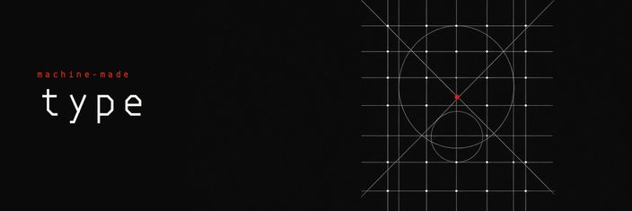
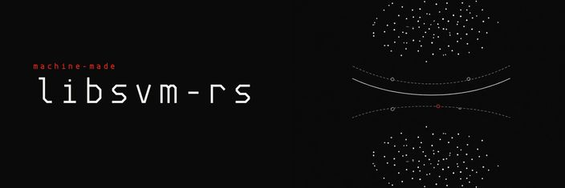
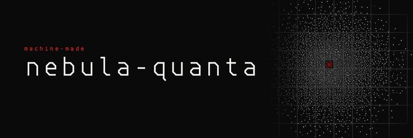
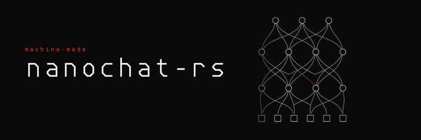
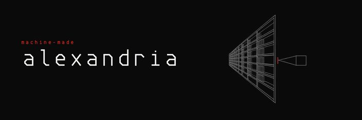
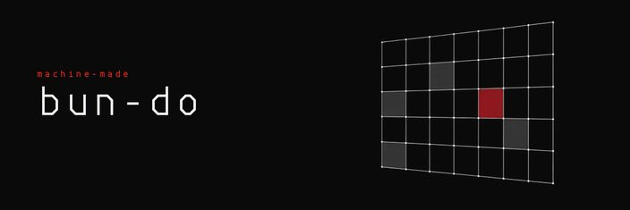
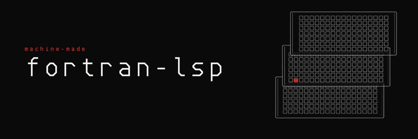
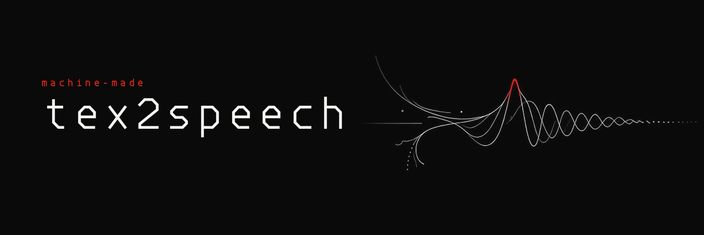

A home-built, asynchronous factory for scientific software.
In 1804 the Jacquard loom wove patterns read from punched cards. The pattern came from a person; the cloth came from the machine. The name and the mark come from those cards.
Type

Weft, Sans, Heddle and Warp, typefaces made by code site
Science and numerics
 CERN ROOT Minuit2 in Rust
CERN ROOT Minuit2 in Rust
LIBSVM in Rust LIBLINEAR in Rust
LIBLINEAR in Rust
Barnes-Hut N-body simulation
small language models trained in Rust
Tools for agents

a research library agents search over MCP
a todo list for people and agents
Fortran for Claude thinking effort for Pi
thinking effort for Pi hand work to a fresh Pi session
hand work to a fresh Pi session
LaTeX and Markdown as spoken words
Desktop
 a PDF viewer that reloads when the file changes
a PDF viewer that reloads when the file changes PDF viewing in VS Code
PDF viewing in VS Code branch and workspace diffs in VS Code
branch and workspace diffs in VS Code